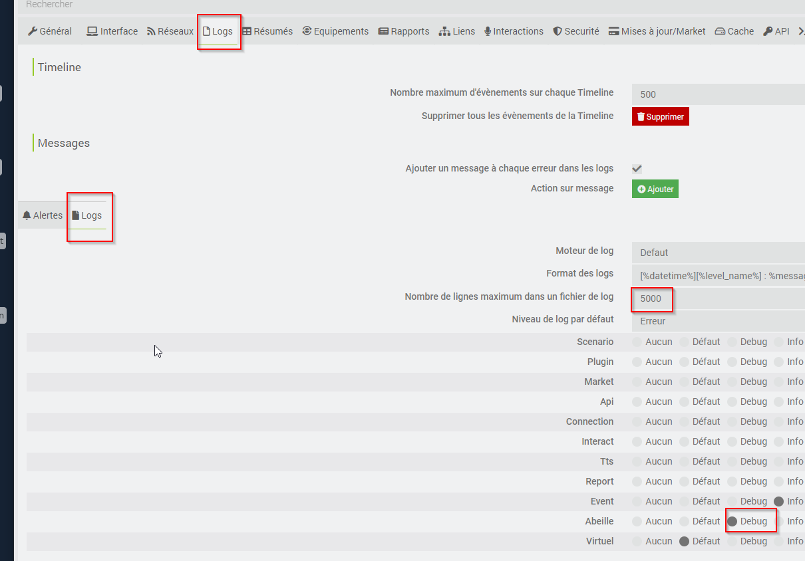

Support¶
Si vous avez des questions, rencontrez des problèmes, ou demandez le support d’un nouvel équipement, c’est le chapitre qu’il vous faut.
Pour toute demande de support, merci avant tout
d’être sur d’être en “mode debug” (voir ci-dessous)
d’avoir modifié le nombre de lignes de log de 500 à 5000 via la configuration Jeedom (voir ci-dessous) Pensez à redémarrer Abeille après ce genre de changement.
Activer le mode “debug”¶
Cette action se fait via la page de configuration du plugin “Abeille”.
Après changement, penser à (dans l’ordre)
à sauver (bouton “Sauvegarder”)
ET redémarrer les démons Abeille
Configuration jeedom pour les logs¶
Pour toute livraison de logs pour besoins de support, il est recommandé de
Passer le nombre de lignes à AU MOINS 5000 par log (500 par défaut = trop court).
Reglages > Systeme > Configuration > Logs
puis encore “Logs”

« Nombre de lignes maximum dans un fichier de log » >= 5000
Sauvegarder
Relancer Abeille
Faire un drag & drop du package fourni par la page support/télécharger tout.
Forum¶
Liste des sujets en cours de discussions:
Forum Jeedom <https://community.jeedom.com/tag/plugin-abeille>_Liste des sujets en cours d’investigations:
GitHub Abeille <https://github.com/KiwiHC16/Abeille/issues?utf8=✓&q=is%3Aissue>_
Accès à la base de données Jeedom¶
Acceder à la database Jeedom qui stocke les équipement ou commandes peut être utile pour le debug.
L’accès se fait via le menu « Réglages », puis « Système » et « Configuration ».
.. image:: images/MenuReglagesSystemeConfig.png
puis « _OS/DB » et enfin « Administration Base de données »
.. image:: images/BoutonAdminBD.png
Affichage des commandes
.. image:: images/Db-SelectCmd.png
.. include:: debug/Monitor.rst
Signaler un bug¶
En cas de soucis ou questions n’ayant pas trouvé réponse dans le forum, vous pouvez ici https://github.com/KiwiHC16/Abeille/issues
soit compléter un sujet existant correspondant à votre souci
soit réouvrir un sujet déja clos si le problème existe toujours
ou enfin créer un nouveau sujet.
Si vous ouvrez une « issue » merci de fournir le plus d’information possible et en particulier:
Votre configuration Jeedom:
Le HW sur lequel vous faite tourner le plugin,
la Version de l’OS,
la version de Jeedom
…
Votre configuration Gateway
Type de Zigate
quel firmware
…
Les logs, aussi nombreux que possibles surtout
AbeilleParser
AbeilleMQTT
Abeille
…
Description
ce que vous cherchez à faire
les résultats
captures d’ecrans
…
Demander une amélioration¶
Si vous souhaitez une évolution dans le plugin, merci d ouvrir une « issue » dans GitHub à l’adresse avec un « Labels » « enhancement »: https://github.com/KiwiHC16/Abeille/issues